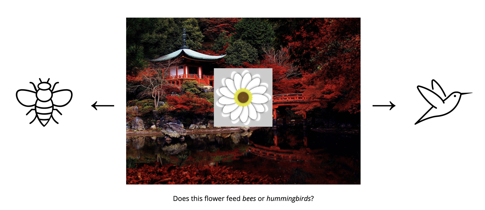

<!DOCTYPE html>
<html lang="en">
<head>
    <meta charset="UTF-8">
    <title>Category Learning Task</title>
    <script src="jspsych-6.3.0/jspsych.js"></script>
    <script src="jspsych-6.3.0/plugins/jspsych-html-keyboard-response.js"></script>
    <script src="jspsych-6.3.0/plugins/jspsych-html-button-response.js"></script>
    <script src="jspsych-6.3.0/plugins/jspsych-image-bkg-keyboard-response.js"></script>
    <script src="jspsych-6.3.0/plugins/jspsych-external-html.js"></script>
    <script src="jspsych-6.3.0/plugins/jspsych-external-html-flower-recon.js"></script>
    <script src="jspsych-6.3.0/plugins/jspsych-instructions.js"></script>
    <script src="jspsych-6.3.0/plugins/jspsych-fullscreen.js"></script>
    <script src="jspsych-6.3.0/plugins/jspsych-survey-multi-choice.js"></script>
    <script src="jspsych-6.3.0/plugins/jspsych-survey-text.js"></script>
    <script src="jspsych-6.3.0/plugins/jspsych-afc-keyboard-response.js"></script>
    <script src="jspsych-6.3.0/plugins/jspsych-preload.js"></script>

    <script src="assets/img/flowers/set0/set0_order.js"></script>
    <script src="assets/img/flowers/set60/set60_order.js"></script>
    <script src="assets/img/flowers/set90/set90_order.js"></script>
    <script src="assets/img/flowers/set120/set120_order.js"></script>
    <script src="assets/img/flowers/set180/set180_order.js"></script>
    <script src="assets/img/flowers/set240/set240_order.js"></script>
    <script src="assets/img/flowers/set270/set270_order.js"></script>
    <script src="assets/img/flowers/set300/set300_order.js"></script>

    <link href="jspsych-6.3.0/css/jspsych.css" rel="stylesheet" type="text/css"></link>

    <style type="text/css">
        html,
        body {
            height: 100%;
        }
        
        /* Scale canvas with resize attribute to full size */
        canvas[resize] {
            width: 30%;
        }
    </style>

</head>
<script>
    
    var start_time = new Date();

    // get prolific ID and session ID
    var prolific_ids = jsPsych.data.urlVariables();

    // get experiment type (1-12)
    var exp_type = prolific_ids.exp;

    window.globals = {x1: 180, x2: 180, x3: 9};
    globals.exp = exp_type.toString();
    var timeline = [];

    /**************************************************** set up ****************************************************/

    // general experiment settings
    var instruction_time = 5000;
    var waiting_time = 3;
    var count_down = waiting_time;
    var num_trials = 48; // number of learning trials (multiple of 4) - usually 48
    
    // feedback and instruction images
    var ins_img = ['assets/img/instructions/example_learning_trial.png', 'assets/img/instructions/example_recon_trial.png','assets/img/instructions/japanese_garden.jpg', 'assets/img/instructions/recon_dials.png', 'assets/img/instructions/4afc_example.png'];
    var feedback_img = ['assets/img/feedback/smile.png', 'assets/img/feedback/frown.png'];
    var category_img = ['assets/img/bee.png', 'assets/img/hummingbird.png']

    // category learning task
    var fixation_time = 1000;
    var stim_time = 3500;
    var stim_onset = 500;
    var bkg_time = 500;
    var feedback_time = 1000;
    var stim_question = "Does this flower feed <i>bees</i> or <i>hummingbirds</i>?";
    var pos_feedback_img = 'assets/img/feedback/smile.png';
    var pos_feedback_aud = 'assets/audio/positive.wav';
    var neg_feedback_img = 'assets/img/feedback/frown.png';
    var neg_feedback_aud = 'assets/audio/negative.wav';

    // old/new recognition task
    var rec_time = 1500;
    var rec_iti = 1000;
    var rec_question = "Is this photograph old or new?";

    // reconstruction task
    var recon_time = 30000;
    var recon_count_down = recon_time/1000;

    // 4AFC association task
    var assoc_question = "Which flower was shown with this photograph?"

    // instructions 
    var learning_ins_start = '<font size="+5">Welcome!</font><br><br>Thank you for participating in our study! <br><br>\
                            First, we are going to go through some instructions and then I will ask you a few <b>questions</b> to make sure you understand the instructions before we begin the games.<br><br>'
    
    var overall_ins = 'Today you are going to be playing <b>three</b> games as part of this experiment.<br><br>\
                        For each of these games, it is really important that you pay attention and try your best.<br>If you do well, you will be able to earn an extra <b>$1.00 in bonus money!<br><br>'

    var gardener_ins = 'Meet the gardener! The gardener is getting ready for spring. For the first game, can you help them organize the flower beds? <br><br>\
                        The gardener wants to know which flowers should go in the <b>Bee</b> section and which flowers should go in the <b>Hummingbird</b> section of the garden.<br><br>\
                        <div class="row" style= "display: flex"><div class="col">\
                             </img>\
                             </div>\
                                 <div class="col"></img>\
                                 </div>\
                        </div>'

    var learning_ins = 'You will be shown different flowers and you should decide whether the flower feeds <i>bees</i> or <i>hummingbirds</i>.<br><br>\
                    <p style="text-align:left; margin: 0% 32% 0% 32%;">EX:<font>\
                    <div style="display:flex; align-items:center; margin: 0% 25% 0% 25%;"">\
                            <div style="float:left; width:100%; vertical-align: middle;">\
                                </img></div>\
                    </div>\
                    <br><div style="text-align: center; clear: both"> Remember that the photographs you see behind the flowers will <b>not </b> help you make your choice.<br><br>\
                    Use the <b>arrow keys</b> on your keyboard to respond.</div>';
                
    var start_ins = '<br>When you are ready, please press <i>Next</i> to answer some questions about the instructions.<br><br>\
                    After you have completed the questions, you can start the first game!<br><br>'                

    var quiz_end1 = '<p style="color:yellow; font-size: 100px; line-height: 0;";>&star;</p>Congratulations!<br><br> I can tell you really understand how to play!<br><br>';

    var quiz_end2 = 'Remember to try your best so you can get the bonus!<br><br>\
                    Please place your fingers on the left (&#8592;) and right (&#8594;) arrow keys on your keyboard.<br>Press the right (&#8594;) arrow key to start.<br><br>';      

    var learning_halfway = "<p style='font-size: 20px;'><b>You are halfway!</b></p>\
                            <p style='color:yellow; font-size: 100px; line-height: 0;';>&star;</p><p style='font-size: 20px;'><b>Keep up the good work!<b></p>";
                    
    var learning_complete = "Nice job! You finished the flower sorting game.<br><br>\
                              Let us take a quick break before we move on to the next game.<br>";

    var rec_start_ins = '<br>Once you have finished reading the instructions, <br>please place your fingers on the left (&#8592;) and right (&#8594;) arrow keys on your keyboard.<br><br> Press right (&#8594;) to begin the next game.<br><br>';
   
    var test_instructions = "For the next game, the gardener needs you to help help them organize their <b>photographs</b>. <br><br>\
                            Can you help them remember which photographs they showed you during the flower sorting game?<br><br>\
                                </img></div>"
    var rec_instructions =  'For this game, you will be shown different photographs and <b>asked whether you saw the photograph</b> behind a flower during the first game.<br><br>\
                            <div style="display:flex; align-items:center; margin: 0% 25% 0% 25%;">\
                            <div style="float:left; width:33%; vertical-align: middle;">\
                                <p style="font-size:200%">Old &#8592;</p>\
                            </div>\
                            <div style="float:left; width:33%; vertical-align: middle;">\
                                </img>\
                            </div>\
                            <div style="float:left; width:33%; vertical-align: middle;">\
                                <p style="font-size:200%">&#8594; New</p>\
                            </div>\
                            </div>\
                            <br><div style="text-align: center; clear: both"> Use the arrow keys to respond.<br>\
                            You will have <b>'+rec_time/1000+' seconds</b> to respond while the photograph is on the screen.<br>\
                            Try your best to give an answer to every single photograph.<br><br>\
                            Try to respond as <b>quickly and correctly</b> as possible.<br><br>\
                            </div>'; 

    var rec_practice_ins = "<br>Before we start the real memory game, we are going to do a <b>practice together</b>.<br><br>Practice responding based on what you were told to do in the instructions.\
                            <br><br>";
                            
    var rec_practice_begin = "<br>Once you understand the instructions, <br>please place your fingers on the left (&#8592;) and right (&#8594;) arrow keys on your keyboard.<br><br> Press right (&#8594;) to begin the practice game.<br><br>";

    var rec_practice_reminder = '<b>Remember:</b><br>\
                                If you have seen the exact same picture before in this experiment, press the <b>left (&#8592;)</b> arrow key.<br>\
                                If you have not seen this exact picture, press the <b>right (&#8594;)</b> arrow key.<br><br>'

    var rec_practice_complete = '<p style="color:yellow; font-size: 100px; line-height: 0;";>&star;</p>The practice is finished. Great job!<br><br>\
                                Do you want to go over the instuctions again before starting the real memory game? If you are ready to start the <b>real</b> memory game, press <i>Next</i>.<br><br>';

    var rec_test_complete = "Nice work! You have now finished the photograph memory game.<br><br>\
                            Take a quick break before we move on to the final game. The computer will move on to the next task in 90 seconds.<br>";

    var test2_instructions = "For the next part of this experiment, <br>we are going to test your memory for the <b>flower</b> you saw with each decorative mat.<br><br>";    

    var recon_instructions = 'This task is expected to take 12 minutes to complete.<br><br>\
                        In each trial, you will see a flower on top of a decorative mat you saw during the category learning phase.</p>\
                        Think back to the specific colour and shape of the flower you saw with this mat.<br>\
                        Using your mouse to adjust the dials at the bottom of the screen, do your best to <b>recreate</b> the colour and shape of the flower you saw as closely as possible.<br><br>'+
                        '</img>'+
                        '<p>When you are finished, click <i>Next</i> with your mouse to save your answer and proceed to the next trial.</p>'+
                        'You will have a maximum of <b>'+recon_time/1000+' seconds</b> to respond and a countdown will appear in the top right corner of the screen.<br>'+
                        'If after a few seconds you cannot remember the flower, make your best guess.<br><br>'+
                        "Please make your responses as <b>precise</b> as possible.<br><br>";

    var recon_start_ins = '<br>Once you have finished reading the instructions, please press <i>Next</i> to begin.<br><br>';
  
    var recon_test_complete = "Great job! You have completed the flower reconstruction task.<br><br>\
                                The computer will move on to the next task in 90 seconds.<br>";

    var assoc_instructions = ["The gardener needs help with one last task.<br><br>\
                            Can you help <b>match</b> each photograph to the flower it was shown with during the sorting game?<br><br>\
                             </img></div>",
                                
                             "Use the numbers on your keyboard to choose <b>which of the four flowers you saw on top of this photograph</b> before. <br><br>\
                                    </img>\
                                    <br>\
                        Try your best to give an answer as <b>quickly and as correctly</b> as possible. Remember, the gardener needs our help!<br><br>\
                        <br>Do you understand the instructions? Please press <i>Next</i> when you are ready to begin.<br><br>"
                            ];
    
    var assoc_test_complete = "Great job! The gardener is happy that you could help them out today! You are almost done the experiment.<br><br>";
                                    
    var next_trial_ins = 'Start the next task<br><br>';

    var test_complete = "Awesome! You have finished the experiment!<br><br> Now I am going to tell you a little bit about why we are doing this experiment.<br><br>\
                                </img></div>";
              
                                
    var survey_q1 = "What strategies did you use to sort the flowers during the first game? Did you have any tips of tricks that helped you sort them?";
    var survey_q2 = "During the flower sorting game, were the photographs distracting? Did you ignore them?";
    var survey_q3 = "Which game was the hardest? Remember, today we played the flower sorting game, then the photograph remebering game, then the flower remembering game.";
    var survey_q4 = "Is there anything else you would like to tell me about the game? What did you think about it?";
    
    // backgrounds in sets (for trials)
    var backgrounds = [
        [
            ['assets/img/backgrounds/abbey.jpg','assets/img/backgrounds/airfield.jpg','assets/img/backgrounds/alcove.jpg','assets/img/backgrounds/amphitheatre.jpg','assets/img/backgrounds/amusement_park.jpg','assets/img/backgrounds/apartment_building.jpg','assets/img/backgrounds/aqueduct.jpg','assets/img/backgrounds/arch.jpg','assets/img/backgrounds/athletic_field.jpg','assets/img/backgrounds/badlands.jpg','assets/img/backgrounds/bamboo_forest.jpg','assets/img/backgrounds/barn.jpg','assets/img/backgrounds/baseball_field.jpg','assets/img/backgrounds/basilica.jpg','assets/img/backgrounds/bayou.jpg','assets/img/backgrounds/bazaar_outdoors.jpg','assets/img/backgrounds/beach_house.jpg','assets/img/backgrounds/beach.jpg','assets/img/backgrounds/beer_garden.jpg','assets/img/backgrounds/boardwalk.jpg','assets/img/backgrounds/boat_deck.jpg','assets/img/backgrounds/botanical_gardens.jpg','assets/img/backgrounds/bridge.jpg','assets/img/backgrounds/bull_ring.jpg', 'assets/img/backgrounds/archive.jpg','assets/img/backgrounds/arena_hockey.jpg','assets/img/backgrounds/art_studio.jpg','assets/img/backgrounds/artist_loft.jpg','assets/img/backgrounds/attic.jpg','assets/img/backgrounds/auditorium.jpg','assets/img/backgrounds/auto_factory.jpg','assets/img/backgrounds/auto_showroom.jpg','assets/img/backgrounds/bakery.jpg','assets/img/backgrounds/balcony_interior.jpg','assets/img/backgrounds/ball_pit.jpg','assets/img/backgrounds/ballroom.jpg','assets/img/backgrounds/banquet_hall.jpg','assets/img/backgrounds/bar.jpg','assets/img/backgrounds/basketball_court.jpg','assets/img/backgrounds/bathroom_public.jpg','assets/img/backgrounds/bay_window.jpg','assets/img/backgrounds/beauty_salon.jpg','assets/img/backgrounds/bedroom.jpg','assets/img/backgrounds/berth.jpg','assets/img/backgrounds/bistro_indoor.jpg','assets/img/backgrounds/bistro_outdoor.jpg','assets/img/backgrounds/boathouse.jpg','assets/img/backgrounds/bookstore.jpg'],
            ['assets/img/backgrounds/abbey_2.jpg','assets/img/backgrounds/airfield_2.jpg','assets/img/backgrounds/alcove_2.jpg','assets/img/backgrounds/amphitheatre_2.jpg','assets/img/backgrounds/amusement_park_2.jpg','assets/img/backgrounds/apartment_building_2.jpg','assets/img/backgrounds/aqueduct_2.jpg','assets/img/backgrounds/arch_2.jpg','assets/img/backgrounds/athletic_field_2.jpg','assets/img/backgrounds/badlands_2.jpg','assets/img/backgrounds/bamboo_forest_2.jpg','assets/img/backgrounds/barn_2.jpg','assets/img/backgrounds/baseball_field_2.jpg','assets/img/backgrounds/basilica_2.jpg','assets/img/backgrounds/bayou_2.jpg','assets/img/backgrounds/bazaar_outdoors_2.jpg','assets/img/backgrounds/beach_house_2.jpg','assets/img/backgrounds/beach_2.jpg','assets/img/backgrounds/beer_garden_2.jpg','assets/img/backgrounds/boardwalk_2.jpg','assets/img/backgrounds/boat_deck_2.jpg','assets/img/backgrounds/botanical_gardens_2.jpg','assets/img/backgrounds/bridge_2.jpg','assets/img/backgrounds/bull_ring_2.jpg','assets/img/backgrounds/archive_2.jpg','assets/img/backgrounds/arena_hockey_2.jpg','assets/img/backgrounds/art_studio_2.jpg','assets/img/backgrounds/artist_loft_2.jpg','assets/img/backgrounds/attic_2.jpg','assets/img/backgrounds/auditorium_2.jpg','assets/img/backgrounds/auto_factory_2.jpg','assets/img/backgrounds/auto_showroom_2.jpg','assets/img/backgrounds/bakery_2.jpg','assets/img/backgrounds/balcony_interior_2.jpg','assets/img/backgrounds/ball_pit_2.jpg','assets/img/backgrounds/ballroom_2.jpg','assets/img/backgrounds/banquet_hall_2.jpg','assets/img/backgrounds/bar_2.jpg','assets/img/backgrounds/basketball_court_2.jpg','assets/img/backgrounds/bathroom_public_2.jpg','assets/img/backgrounds/bay_window_2.jpg','assets/img/backgrounds/beauty_salon_2.jpg','assets/img/backgrounds/bedroom_2.jpg','assets/img/backgrounds/berth_2.jpg','assets/img/backgrounds/bistro_indoor_2.jpg','assets/img/backgrounds/bistro_outdoor_2.jpg','assets/img/backgrounds/boathouse_2.jpg','assets/img/backgrounds/bookstore_2.jpg']
        ],
        [
            ['assets/img/backgrounds/bus_station.jpg','assets/img/backgrounds/butte.jpg','assets/img/backgrounds/cabin.jpg','assets/img/backgrounds/campus.jpg','assets/img/backgrounds/canal_natural.jpg','assets/img/backgrounds/canyon.jpg','assets/img/backgrounds/carrousel.jpg','assets/img/backgrounds/castle.jpg','assets/img/backgrounds/chalet.jpg','assets/img/backgrounds/cliff.jpg','assets/img/backgrounds/construction_site.jpg','assets/img/backgrounds/convention_center.jpg','assets/img/backgrounds/coral_reef.jpg','assets/img/backgrounds/corn_field.jpg','assets/img/backgrounds/corral.jpg','assets/img/backgrounds/cottage_garden.jpg','assets/img/backgrounds/cottage.jpg','assets/img/backgrounds/courthouse.jpg','assets/img/backgrounds/courtyard.jpg','assets/img/backgrounds/creek.jpg','assets/img/backgrounds/crosswalk.jpg','assets/img/backgrounds/dam.jpg','assets/img/backgrounds/desert_road.jpg','assets/img/backgrounds/desert_vegetation.jpg','assets/img/backgrounds/boxing_ring.jpg','assets/img/backgrounds/bus_interior.jpg','assets/img/backgrounds/cafeteria.jpg','assets/img/backgrounds/candy_store.jpg','assets/img/backgrounds/car_back_seat.jpg','assets/img/backgrounds/catacombs.jpg','assets/img/backgrounds/cathedral_indoor.jpg','assets/img/backgrounds/childs_room.jpg','assets/img/backgrounds/classroom.jpg','assets/img/backgrounds/closet.jpg','assets/img/backgrounds/clothing_store.jpg','assets/img/backgrounds/cockpit.jpg','assets/img/backgrounds/coffee_shop.jpg','assets/img/backgrounds/conference_room.jpg','assets/img/backgrounds/cubicle.jpg','assets/img/backgrounds/deli.jpg','assets/img/backgrounds/dining_room.jpg','assets/img/backgrounds/elevator_lobby.jpg','assets/img/backgrounds/escilator.jpg','assets/img/backgrounds/fastfood_restaurant.jpg','assets/img/backgrounds/galley.jpg','assets/img/backgrounds/general_store_indoors.jpg','assets/img/backgrounds/greenhouse.jpg','assets/img/backgrounds/gymnsium.jpg'],
            ['assets/img/backgrounds/bus_station_2.jpg','assets/img/backgrounds/butte_2.jpg','assets/img/backgrounds/cabin_2.jpg','assets/img/backgrounds/campus_2.jpg','assets/img/backgrounds/canal_natural_2.jpg','assets/img/backgrounds/canyon_2.jpg','assets/img/backgrounds/carrousel_2.jpg','assets/img/backgrounds/castle_2.jpg','assets/img/backgrounds/chalet_2.jpg','assets/img/backgrounds/cliff_2.jpg','assets/img/backgrounds/construction_site_2.jpg','assets/img/backgrounds/convention_center_2.jpg','assets/img/backgrounds/coral_reef_2.jpg','assets/img/backgrounds/corn_field_2.jpg','assets/img/backgrounds/corral_2.jpg','assets/img/backgrounds/cottage_garden_2.jpg','assets/img/backgrounds/cottage_2.jpg','assets/img/backgrounds/courthouse_2.jpg','assets/img/backgrounds/courtyard_2.jpg','assets/img/backgrounds/creek_2.jpg','assets/img/backgrounds/crosswalk_2.jpg','assets/img/backgrounds/dam_2.jpg','assets/img/backgrounds/desert_road_2.jpg','assets/img/backgrounds/desert_vegetation_2.jpg','assets/img/backgrounds/boxing_ring_2.jpg','assets/img/backgrounds/bus_interior_2.jpg','assets/img/backgrounds/cafeteria_2.jpg','assets/img/backgrounds/candy_store_2.jpg','assets/img/backgrounds/car_back_seat_2.jpg','assets/img/backgrounds/catacombs_2.jpg','assets/img/backgrounds/cathedral_indoor_2.jpg','assets/img/backgrounds/childs_room_2.jpg','assets/img/backgrounds/classroom_2.jpg','assets/img/backgrounds/closet_2.jpg','assets/img/backgrounds/clothing_store_2.jpg','assets/img/backgrounds/cockpit_2.jpg','assets/img/backgrounds/coffee_shop_2.jpg','assets/img/backgrounds/conference_room_2.jpg','assets/img/backgrounds/cubicle_2.jpg','assets/img/backgrounds/deli_2.jpg','assets/img/backgrounds/dining_room_2.jpg','assets/img/backgrounds/elevator_lobby_2.jpg','assets/img/backgrounds/escilator_2.jpg','assets/img/backgrounds/fastfood_restaurant_2.jpg','assets/img/backgrounds/galley_2.jpg','assets/img/backgrounds/general_store_indoors_2.jpg','assets/img/backgrounds/greenhouse_2.jpg','assets/img/backgrounds/gymnsium_2.jpg']
        ]
    ]
    var back_copy = [[backgrounds[0][0].slice(), backgrounds[0][1].slice()], [backgrounds[1][0].slice(), backgrounds[1][1].slice()]];

    var flower_sets = ['set0','set60','set120', 'set180', 'set240', 'set300'];
    var set_folder = flower_sets[0];
    var group_condition = 0;
    var background_set = 0;
    var lure = 0;
    var flower_info = [];

    /*                      Group 1                Group 2  Group 3 Group 4 etc.
        start colour :      0                      | 60     | 120   | 180
        group condition:    0 (A:bee, B:humming)   | 1      | 0     | 1
        background set:     0                      | 0      | 1     | 1
        lure:               1                      | 0      | 1     | 0
    */
    switch(exp_type){
        case "1":
            set_folder = flower_sets[0];
            group_condition = 0;
            background_set = 0;
            lure = 1;
            novel = 0;
            flower_info = set0_flower_info;
            break;
        case "2":
            set_folder = flower_sets[1];
            group_condition = 1;
            background_set = 0;
            lure = 0;
            novel = 1;
            flower_info = set60_flower_info;
            break;
        case "3":
            set_folder = flower_sets[2];
            group_condition = 0;
            background_set = 1;
            lure = 1;
            novel = 0;
            flower_info = set120_flower_info;
            break;
        case "4":
            set_folder = flower_sets[3];
            group_condition = 1;
            background_set = 1;
            lure = 0;
            novel = 1;
            flower_info = set180_flower_info;
            break;
        case "5":
            set_folder = flower_sets[4];
            group_condition = 0;
            background_set = 0;
            lure = 1;
            novel = 0;
            flower_info = set240_flower_info;
            break;
        case "6":
            set_folder = flower_sets[5];
            group_condition = 1;
            background_set = 0;
            lure = 0;
            novel = 1;
            flower_info = set300_flower_info;
            break;
        case "7":
            set_folder = flower_sets[0];
            group_condition = 1;
            background_set = 1;
            lure = 1;
            novel = 0;
            flower_info = set0_flower_info;
            break;
        case "8":
            set_folder = flower_sets[1];
            group_condition = 0;
            background_set = 1;
            lure = 0;
            novel = 1;
            flower_info = set60_flower_info;
            break;
        case "9":
            set_folder = flower_sets[2];
            group_condition = 1;
            background_set = 0;
            lure = 1;
            novel = 0;
            flower_info = set120_flower_info;
            break;
        case "10":
            set_folder = flower_sets[3];
            group_condition = 0;
            background_set = 0;
            lure = 0;
            novel = 1;
            flower_info = set180_flower_info;
            break;
        case "11":
            set_folder = flower_sets[4];
            group_condition = 1;
            background_set = 1;
            lure = 1;
            novel = 0;
            flower_info = set240_flower_info;
            break;
        case "12":
            set_folder = flower_sets[5];
            group_condition = 0;
            background_set = 1;
            lure = 0;
            novel = 1;
            flower_info = set300_flower_info;
            break;
        default:
            break;
    }   
    var categories = flower_info.map(a=>a.category);

    var t2 = new Date();
    console.log("var setup : "+((t2.getTime() - start_time.getTime())/1000));

    // category learning stimuli (flower, sun/shade, background, lure)
    var stimuli = []; 
    var flowers = [];       
    for (i = 0; i < num_trials; i+=4) {
        for (x=0;x<4;x++) {
            if ((categories[i+x]=='A' && group_condition==0) || (categories[i+x]=='B' && group_condition==1)){
                var g = 'bee';
            } else {
                var g = 'hummingbird';
            }
            var randomIndex = Math.floor(Math.random()*(num_trials-x-i)); // randomly select background image
            
            // create if first of colour set or first of shape
            var create = 1;
            for (idx=0; idx<x; idx++){
                if (categories[i+idx]==categories[i+x]) {
                    create = 0;
                }
            }
            stimuli.push(
                {
                    stimulus: 'assets/img/flowers/'+set_folder+'/flower'+(i+x+1).toString() +'.png',
                    shape: flower_info[i+x]["shape"],
                    colour: flower_info[i+x]["shade"],
                    colour_section: flower_info[i+x]["colour"],
                    category: categories[i+x],
                    group: g,
                    create: create,
                    background: back_copy[background_set][1-lure].splice(randomIndex, 1)[0],
                    lure: back_copy[background_set][lure].splice(randomIndex, 1)[0]
                }
            )
            flowers.push('assets/img/flowers/'+set_folder+'/flower'+(i+x+1).toString() +'.png');
        }      
    }

    t2 = new Date();
    console.log("cat learn stim : "+((t2.getTime() - start_time.getTime())/1000));

    // stimuli for recognition test
    var rec_backs = []
    var novel_backs = jsPsych.randomization.sampleWithoutReplacement(backgrounds[1-background_set][1-lure], num_trials/2);
    for (i=0;i<num_trials; i++) {

        // 48 old
       rec_backs.push({
           background: stimuli[i].background,
           lure: 0,
           create: stimuli[i].create,
            exp_sub_section: 'main'
        });

        // 48 lure
       rec_backs.push({
           background: stimuli[i].lure,
           lure: 1,
           create: stimuli[i].create,
           exp_sub_section: 'main'
       });

       // 24 new
       if (i<(num_trials/2)) {
            rec_backs.push({
                background: novel_backs[i],
                lure: -1,
                create: -1,
                exp_sub_section: 'main'
            });
       }
    }

    // randomize order while making sure no lures are back to back with their originals
    var rec_backs_shuffled = jsPsych.randomization.shuffle(rec_backs);
    for (i=0;i<rec_backs_shuffled.length; i++) {
        if (i>0) {
            var cur = rec_backs_shuffled[i];
            var prev = rec_backs_shuffled[i-1];
            if ((cur.lure==1 && prev.lure==0) ||
                (cur.lure==0 && prev.lure==1) ) {

                    // if previous and current are a matched pair (lure + orig) shuffle again
                    if (cur.background.match('[a-z/]+')[0] ==
                        prev.background.match('[a-z/]+')[0]) {
                            rec_backs_shuffled = jsPsych.randomization.shuffle(rec_backs_shuffled);
                            i = 0;
                    }
                }
        }
    }
    rec_backs = rec_backs_shuffled;

    var rec_backs_practice = [{
                background: 'assets/img/instructions/japanese_garden.jpg',
                lure: -1,
                create: -1,
                exp_sub_section: 'practice'
    }];
    var num_practice_trials = 5;
    for (i=0; i<(num_practice_trials*2-1); i++) {
        var n = jsPsych.randomization.sampleWithoutReplacement(backgrounds[1-background_set][1-lure], 1)[0];
        while (rec_backs_practice.map(a => a.background).includes(n) || rec_backs.map(a => a.background).includes(n)) {
            n = jsPsych.randomization.sampleWithoutReplacement(backgrounds[1-background_set][1-lure], 1)[0]
        }
        rec_backs_practice.push({
                background: n,
                lure: -1,
                create: -1,
                exp_sub_section: 'practice'
        });
    }

    t2 = new Date();
    console.log("rec backs : "+((t2.getTime() - start_time.getTime())/1000));

    // 4AFC association stimuli choices
    var assoc_stimuli = stimuli; // shuffle original learning stim
    assoc_stimuli = assoc_stimuli.map(e => ({...e, used: 0}));
    for (i=0; i<assoc_stimuli.length; i++) {
        
        // skip stimuli that have been given choices already
        if (typeof assoc_stimuli[i].choices != 'undefined') {
            continue;
        }
        
        // all same condition (create or update)   
        var opts = assoc_stimuli.filter(s => s.create == assoc_stimuli[i].create);  
        var choices = [];

        // FOR s1c1

        // 1) correct shape, correct colour (s1c1)
        choices.push(assoc_stimuli[i].stimulus);

        // 2) different shape, correct (similar) colour (s2c1)
        var choice1 = jsPsych.randomization.sampleWithoutReplacement(opts.filter(s => s.category != assoc_stimuli[i].category && s.colour_section == assoc_stimuli[i].colour_section), 1)[0];
        choices.push(choice1.stimulus);

        // 3) correct shape, different colour (s1c2)
        var c_change_by = (Math.random()) > 0.5 ? 90: -90; // randomly choose direction (c2 = colour +/-90)
        var c_change = (assoc_stimuli[i].colour_section + c_change_by)%360;
        if (c_change < 0) c_change += 360;
        var choice2 = opts.filter(s => (s.category == assoc_stimuli[i].category) && s.colour_section == c_change && s.used < 1)
        if (choice2.length == 0) {
            c_change_by = -1*c_change_by;
            c_change = (assoc_stimuli[i].colour_section + c_change_by)%360;
            if (c_change < 0) c_change += 360;
            choice2 = opts.filter(s => (s.category == assoc_stimuli[i].category) && s.colour_section == c_change && s.used < 1)
        }
        var tmp = jsPsych.randomization.sampleWithoutReplacement(choice2, 1)[0];
        choices.push(tmp.stimulus);
        assoc_stimuli.filter(c => c.stimulus == tmp.stimulus)[0].used++;

        // 4) different shape, different colour (s2c2)
        var choice3 = jsPsych.randomization.sampleWithoutReplacement(opts.filter(s => s.category != assoc_stimuli[i].category && s.colour_section == tmp.colour_section), 1)[0];
        choices.push(choice3.stimulus);

        assoc_stimuli[i].choices = jsPsych.randomization.shuffle(choices);       
        

        // FOR PAIR ITEM (s2c1)
        var pair_choices = []
        
        // 1) correct shape, correct colour (s2c1)
        pair_choices.push(choice1.stimulus);

        // 2) different shape, correct (similar) colour (s1c1)
        pair_choices.push(assoc_stimuli[i].stimulus);

        // 3) correct shape, different colour (s2c2)
        var c_change_by = -1*c_change_by; // opposite direction than pair
        var c_change = (choice1.colour_section + c_change_by)%360;
        if (c_change < 0) c_change += 360;
        var choice2 = opts.filter(s => (s.category == choice1.category) && s.colour_section == c_change && s.used < 1)
        var tmp = jsPsych.randomization.sampleWithoutReplacement(choice2, 1)[0];
        pair_choices.push(tmp.stimulus);
        assoc_stimuli.filter(c => c.stimulus == tmp.stimulus)[0].used++;

        // 4) different shape, different colour (s1c2)
        var choice3 = jsPsych.randomization.sampleWithoutReplacement(opts.filter(s => s.category != choice1.category && s.colour_section == tmp.colour_section), 1)[0];
        pair_choices.push(choice3.stimulus);

        assoc_stimuli.filter(c => c.stimulus == choice1.stimulus)[0].choices = jsPsych.randomization.shuffle(pair_choices);

    }

    t2 = new Date();
    console.log("afc choices : "+((t2.getTime() - start_time.getTime())/1000));


    /**************************************************** subject ID ****************************************************/
    
            // Subject id = subject number + group condition
            var subjectID_survey = {
            type: 'survey-text',
            questions: [
                {prompt: 'Subject Number:', name: 'subject_id', rows: 1, columns:10, required:true},
                {prompt: 'Age:', name: 'age', rows: 1, columns:10, required:true},
            ],
            data: {
                exp_section: 'subjectid_survey'
            },
            button_label: 'Start',
        }

    // Subject id = subject number + shape condition + orig-lure background set + lure list + start colour
    function makeid() {
        var id = '';

        // subject number (15 digit code)
        id += jsPsych.randomization.randomID(15);

        // shape condition (0: sun = A or 1: shade = A)
        id += group_condition.toString();

        // orig-lure background set (0 or 1)
        id += background_set.toString();

        // lure list (0 or 1)
        id += lure.toString();

        // starting colour ()
        id += set_folder.slice(3, set_folder.length);

        return id;
    }
    var subject_id = makeid();
    
    /**************************************************** consent ****************************************************/
    
    // fullscreen
    var fullscreen = {
        type: 'fullscreen',
        fullscreen_mode: true
    };

    // consent
    var consent_inst = {
        type: 'html-button-response',
        stimulus: html='<p style="color: black; font-size: 20px;">'
           +'We would like to get your consent before starting the experiment.</p>',
        choices: ['Consent page'], 
        data: {disp_type: 'consent-instruction'}
    }
    var check_consent = function(elem) {
        if (document.getElementById('agree_checkbox').checked) {                             
            return true;
        } else {
            alert("If you wish to participate, you must check the box next to the statement 'I agree.'");
            return false;
        }
        return false;
    };
    var consent_page = {
        type: 'external-html',
        url: "assets/materials/consent.html",
        cont_btn: "start",
        check_fn: check_consent,
        data: {disp_type: 'online_consent_form'}
    }

    var next_trial = {
        type: 'html-button-response',
        stimulus: '',
        choices: ['Next'],
        button_html: '<button class="jspsych-btn" style="width:125%; font-size:125%; text-align:center;">Next</button>'
    }

     /**************************************************** Instructions and quiz ****************************************************/
    
     // welcome and instructions
    var start_trial = {
        type: 'instructions',
        pages: [learning_ins_start, overall_ins, gardener_ins, learning_ins, start_ins],
        show_clickable_nav: true,
        show_page_number: true
    };

    // instruction quiz
    var q1_prompt = "1) In the first game I will _____";
    var q1_options = ["learn to sort the gardener's photographs into groups.", "learn to respond as fast as possible.", "learn to sort the flowers based on whether they feed bees or hummingbirds."];
    
    var q2_prompt = "2) For each flower, I should ______ to respond.";
    var q2_options = ["click the bee or hummingbird with my mouse", "press any random letter on my keyboard", "press the left or right arrow key", "use my mouse to click left or right"];
    
    var q3_prompt = "3) TRUE or FALSE: The photograph shown behind the flower will help me make my choice.";
    var q3_options = ["True", "False"];
    
    var q4_prompt = "4) TRUE or FALSE: I can make a choice as soon as the flower appears."
    var q4_options = ["True", "False"];

    var num_quiz_qs = 4;

    var ins_quiz = {
        type: 'survey-multi-choice',
        questions: [
            {prompt: q1_prompt, name: 'goal', options: q1_options, required: true, horizontal:false},
            {prompt: q2_prompt, name: 'respond', options: q2_options, required: true, horizontal:false},
            {prompt: q3_prompt, name: 'mat', options: q3_options, required: true, horizontal:false},
            {prompt: q4_prompt, name: 'time', options: q4_options, required: true, horizontal:false}
        ],
        preamble: '<b>Example trial:</b><br>\
                    <div style="display:flex; align-items:center; margin: 0% 25% 0% 25%;"">\
                            <div style="float:left; width:100%; vertical-align: middle;">\
                                </img></div>\
                    </div>\
                    <br><br><b>Questions:</b>',
        button_label: 'Submit',
        on_finish: function(data) {
            var num_correct = 0;
            if (JSON.parse(data.responses).goal == q1_options[2]) {
                num_correct += 1;
            }
            if (JSON.parse(data.responses).respond == q2_options[2]) {
                num_correct += 1;
            }
            if (JSON.parse(data.responses).mat == q3_options[1]) {
                num_correct += 1;
            }
            if (JSON.parse(data.responses).time == q4_options[0]) {
                num_correct += 1;
            }
            data.num_correct = num_correct;
            
        },
        data: {
            exp_section: 'instruction_quiz'
        }
    };

    // repeat quiz if below 100% performance
    var quiz_wrong = {    
        type: 'html-button-response',
        stimulus: function() {
            return 'Your score was '+jsPsych.data.get().last(1).values()[0].num_correct+'/'+num_quiz_qs+'.<br><br>\
                    Let us take another look at the instructions together to make sure you understand.<br><br>\
                    After that, we will give the questions another try and then start the first game.<br><br>';
        },
        choices: ['Review instructions'],
    } 

    var repeat_ins = {
        type: 'instructions',
        pages: [overall_ins, learning_ins, start_ins],
        show_clickable_nav: true,
        show_page_number: true
    };
    
    var ins_quiz2 = {
        timeline: [quiz_wrong, repeat_ins, ins_quiz],
        conditional_function: function(){
            var data = jsPsych.data.get().last(1).values()[0];
            if(data.num_correct == num_quiz_qs){
                return false;
            } else {
                return true;
            }
        }
    }

    // if <100%, show answers
    var quiz_answers = {
        type: 'html-button-response',
        stimulus: function() {
            return 'Your score was '+jsPsych.data.get().last(1).values()[0].num_correct+'/'+num_quiz_qs+'.<br><br>\
                        <br><b>Answers</b><br><br>\
                        <div>'+q1_prompt+' <b>'+q1_options[2]+'</b></div>\
                        <div>'+q2_prompt.split("______")[0]+'  <b>'+q2_options[2]+'</b>  '+q2_prompt.split("______")[1]+'</div>\
                        <div>'+q3_prompt+' <b>'+q3_options[1]+'</b></div>\
                        <div>'+q4_prompt+' <b>'+q4_options[0]+'</b></div>\
                        <br><br>\
                        Click <i>Next</i> to proceed.<br><br>';
        },
        choices: ['Next']
    }

    var quiz_end_wrong = {
        timeline: [quiz_answers],
        conditional_function: function(){
            var data = jsPsych.data.get().last(1).values()[0];
            if(data.num_correct == num_quiz_qs){
                return false;
            } else {
                return true;
            }
        }
    }

    // end of quiz
    var start_task_ins = {
        type: 'instructions',
        pages: [quiz_end1,
                quiz_end2],
        show_clickable_nav: true,
        show_page_number: true
    }


    /**************************************** PART I - category learning ******************************************/

    // 1) fixation cross
    var fixation = {  
        type: 'html-keyboard-response',
        stimulus: '+',
        choices: jsPsych.NO_KEYS,
        trial_duration: fixation_time,
        data: {
            exp_section: 'category_learning'
        }
    }

    // 2) stimulus + background
    var stim = {  
        type: 'image-bkg-keyboard-response',
        stimulus: jsPsych.timelineVariable('stimulus'),
        background: jsPsych.timelineVariable('background'),
        choices: jsPsych.ALL_KEYS,
        prompt: '<p class="prompt">'+stim_question+'</p>',
        response_ends_trial: false,
        trial_duration: stim_time+bkg_time,
        stimulus_onset: stim_onset,
        options: ['Bees', 'Hummingbirds'],
        option_img: category_img,
        data: {
            exp_section: 'category_learning',
            stimulus_type: jsPsych.timelineVariable('group'),
            category: jsPsych.timelineVariable('category'),
            create: jsPsych.timelineVariable('create'),
            background: jsPsych.timelineVariable('background'),
            lure: jsPsych.timelineVariable('lure')
        },
        on_finish: function(data){
            if( ( (data.response == 'arrowright') && (data.stimulus_type == 'hummingbird') )
                || ( (data.response == 'arrowleft') && (data.stimulus_type == 'bee') ) ){
                data.correct = true;
            } else {
                data.correct = false;
            }
        }
    }

    // 4) feedback
    var feedback = {
        type: 'html-keyboard-response',
        stimulus: function() {
            var last_trial_correct = jsPsych.data.get().last().values()[0].correct;
            var html = "";
            var last_trial_rt = jsPsych.data.get().last().values()[0].rt==null;

            if(last_trial_correct){
                html += "<p style='color:green; font-size:90px; line-height: 0.7; margin-top: 5%;'>Correct! &nbsp;"+
                        ""+
                        '<audio autoplay>\
                            <source src="'+pos_feedback_aud+'" type="audio/wav">\
                            Your browser does not support the audio element.\
                        </audio>';
        
            } else {
                if(last_trial_rt){ 
                html += "<p style='color:red; font-size:60px; line-height: 0.7; margin-top: 5%;'>Try to respond faster. &nbsp;"+
                        '<audio autoplay>\
                            <source src="'+neg_feedback_aud+'" type="audio/wav">\
                            Your browser does not support the audio element.\
                        </audio>';
            
                 } else {
                    html += "<p style='color:red; font-size:75px; line-height: 0.7; margin-top: 5%;'>Wrong. &nbsp;"+
                        '<audio autoplay>\
                            <source src="'+neg_feedback_aud+'" type="audio/wav">\
                            Your browser does not support the audio element.\
                        </audio>';        
                }
            }
            
            
          

            html += "<br><span style='color:black; font-size:68px; line-height: 1.5;'>This flower feeds <i>"+jsPsych.data.get().last().values()[0].stimulus_type+"s</i>.</span><br>";
            
            if(jsPsych.data.get().last().values()[0].stimulus_type == 'hummingbird') {
                html += "";
            } else {
                html += "";
            }

            html += "</p>"
            
            return html;
        },
        choices: jsPsych.NO_KEYS,
        trial_duration: feedback_time,
        data: {
            exp_section: 'category_learning'
        },
        on_finish: function(data) {
            var curr_progress_bar_value = jsPsych.getProgressBarCompleted();
            jsPsych.setProgressBar(curr_progress_bar_value + (1/stimuli.length));
        }
    }

    // halfway notification
    var halfway_notif = {
        type: 'html-keyboard-response',
        choices: jsPsych.NO_KEYS,
        stimulus: learning_halfway,
        trial_duration: instruction_time
    }
    
    // entire categorization trial set
    var categorization_trials = {
        timeline: [
            {
            timeline : [fixation, stim, feedback],
            timeline_variables: stimuli.slice(0, num_trials/2)    
            },
            halfway_notif,
            {
            timeline : [fixation, stim, feedback],
            timeline_variables: stimuli.slice(num_trials/2)    
            }
        ]
    }

    // draw instructions for ending learning phase
    var draw_end_learning = {
        type: 'html-keyboard-response',
        choices: jsPsych.NO_KEYS,
        stimulus: learning_complete,
        trial_duration: instruction_time
    };
    
    // draw timer
    var timer_start = {
        type: 'html-keyboard-response',
        choices: jsPsych.NO_KEYS,
        stimulus: function(){
          return count_down;
        },
        trial_duration: 1000 // ms
    };

    var timer_loop = {
        timeline: [timer_start],
        loop_function: function(){
            if (count_down == 0) {
            count_down = waiting_time;
            return false;
            } else {
            count_down -= 1;
            return true;
            };
        }  
    } 

    /**************************************** PART II - Old/New Memory test  *********************************************/

    // 1) Scene recognition

    // Instructions for recognition task
    var rec_instruction_trial = {
        type: 'instructions',
        pages: [test_instructions, rec_instructions, rec_practice_ins, rec_practice_begin],
        show_clickable_nav: true,
        show_page_number: true,
        on_start: function() {
            // set progress bar to 0 at the start of experiment
            jsPsych.setProgressBar(0);
        }
    };

    var rec_instruction_trial2 = {
        type: 'instructions',
        pages: [rec_practice_complete, rec_instructions, rec_start_ins],
        show_clickable_nav: true,
        show_page_number: true,
        on_start: function() {
            // set progress bar to 0 at the start of experiment
            jsPsych.setProgressBar(0);
        }
    };

    // a) old/new recognition trial
    var rec_background = {
        type: 'image-bkg-keyboard-response',
        background: jsPsych.timelineVariable('background'),
        stimulus:'',
        choices: jsPsych.ALL_KEYS,
        prompt: '<p class="prompt">'+rec_question+'</p>',
        response_ends_trial: false,
        trial_duration: rec_time,
        options: ['Old', 'New'],
        lure: jsPsych.timelineVariable('lure'),
        data: {
            exp_section: 'scene_recognition',
            background: jsPsych.timelineVariable('background'),
            create_trial: jsPsych.timelineVariable('create'),
            lure: jsPsych.timelineVariable('lure'),
            exp_sub_section: jsPsych.timelineVariable('exp_sub_section')
        },
        on_finish: function(data){
            // "old" and actually old (0), "new" and lure (1) or new (-1)
            if( ( (data.response == 'arrowleft') && (data.lure== 0) )
                || ( (data.response == 'arrowright') && (data.lure == 1) ) 
                || ( (data.response == 'arrowright') && (data.lure == -1) )){
                data.correct = true;
            } else {
                data.correct = false;
            }
            var curr_progress_bar_value = jsPsych.getProgressBarCompleted();
            jsPsych.setProgressBar(curr_progress_bar_value + (1/rec_backs.length));
        }
    }

    // a) PRACTICE old/new recognition trial
    var rec_background_practice = {
        type: 'image-bkg-keyboard-response',
        background: jsPsych.timelineVariable('background'),
        stimulus:'',
        choices: jsPsych.ALL_KEYS,
        prompt: '<p class="prompt">'+rec_question+'</p>',
        practice: true,
        response_ends_trial: false,
        trial_duration: rec_time,
        options: ['Old', 'New'],
        lure: jsPsych.timelineVariable('lure'),
        data: {
            exp_section: 'scene_recognition',
            background: jsPsych.timelineVariable('background'),
            create_trial: jsPsych.timelineVariable('create'),
            lure: jsPsych.timelineVariable('lure'),
            exp_sub_section: jsPsych.timelineVariable('exp_sub_section')
        },
        on_finish: function(data){
            // "old" and actually old (0), "new" and lure (1) or new (-1)
            if( ( (data.response == 'arrowleft') && (data.lure== 0) )
                || ( (data.response == 'arrowright') && (data.lure == 1) ) 
                || ( (data.response == 'arrowright') && (data.lure == -1) )){
                data.correct = true;
            } else {
                data.correct = false;
            }
            var curr_progress_bar_value = jsPsych.getProgressBarCompleted();
            jsPsych.setProgressBar(curr_progress_bar_value + (1/num_practice_trials));
        }
    }

    // b) fixation
    var rec_fixation = {  
        type: 'html-keyboard-response',
        stimulus: '+',
        choices: jsPsych.ALL_KEYS,
        trial_duration: rec_iti,
        response_ends_trial: false,
        data: {
            exp_section: 'scene_recognition',
        },
        on_finish: function(data){
            if (jsPsych.data.get().last(2).values()[0]) {
                var lure = jsPsych.data.get().last(2).values()[0].lure;

                // "old" and actually old (0), "new" and lure (1) or new (-1)
                if( ( (data.response == 'arrowleft') && (lure== 0) )
                    || ( (data.response == 'arrowright') && (lure == 1) ) 
                    || ( (data.response == 'arrowright') && (lure == -1) )){
                    data.correct = true;
                } else if (data.response) {
                    data.correct = false;
                }

                data.background = jsPsych.data.get().last(2).values()[0].background;
                data.create_trial = jsPsych.data.get().last(2).values()[0].create_trial;
                data.lure = jsPsych.data.get().last(2).values()[0].lure;
                data.exp_sub_section = jsPsych.data.get().last(2).values()[0].exp_sub_section
            }
            
        }
    }

    // practice
    var recognition_practice_trials = {
        timeline: [rec_fixation, rec_background_practice],
        timeline_variables: rec_backs_practice.slice(0,num_practice_trials),
        randomize_order: true
    }

    // practice 2 (conditional on practice 1 performance)
    var rec_practice_reminder = {
        type: 'html-button-response',
        choices: ['Continue practice session'],
        stimulus: rec_practice_reminder,
        on_start: function() {
            // set progress bar to 0 at the start of experiment
            jsPsych.setProgressBar(0);
        }
    };

    var recognition_practice_trials2 = {
        timeline: [
            rec_practice_reminder,
            {
            timeline: [rec_fixation, rec_background_practice],
            timeline_variables: rec_backs_practice.slice(num_practice_trials)
            }, 
            rec_fixation
        ],  
        conditional_function: function(){
            var keypress_data = jsPsych.data.get().filter([{exp_section: 'scene_recognition', stimulus: ""}]).values().map(a=>a.response);
            
            // skip second practice if respond to more than 2 with arrow keys
            if (keypress_data.map(a=>a=='arrowright'||a=='arrowleft').filter(Boolean).length > 2) {
                return false;
            }
            return true;
        }
    }

    // real
    var recognition_trials = {
        timeline: [rec_fixation, rec_background],
        timeline_variables: rec_backs
    }

    // draw instructions for ending recognition phase
    var draw_end_rec_test = {
        type: 'html-keyboard-response',
        choices: jsPsych.NO_KEYS,
        stimulus: rec_test_complete,
        trial_duration: instruction_time
    };

    /**************************************** PART II - Reconstruction Memory test  *********************************************/

    // instructions
    var recon_instruction_trial = {
        type: 'instructions',
        pages: [test2_instructions, recon_instructions, recon_start_ins],
        show_clickable_nav: true,
        show_page_number: true,
        on_start: function() {
            // set progress bar to 0 at the start of experiment
            jsPsych.setProgressBar(0);
        }
    };

    // reconstruction trial
    var recon_trial = {
        type: 'external-html-flower-recon',
        url: 'flower_generator_index.html',
        background: jsPsych.timelineVariable('background'), // only actually seen backgrounds
        execute_script: true,
        cont_btn: "Next",
        check_fn: function(elem) {
            if ((document.getElementById('x1').getAttribute('clicked') == "false") &&
                !(document.getElementById('countdown').innerHTML == "1" )){
                return false;
            }
            return true;
        },
        trial_duration: recon_time,
        data: {
            exp_section: 'flower_reconstruction',
            background: jsPsych.timelineVariable('background'),
            create_trial: jsPsych.timelineVariable('create'),
            stimulus: jsPsych.timelineVariable('stimulus')
        },
        on_finish: function(data){
            var curr_progress_bar_value = jsPsych.getProgressBarCompleted();
            jsPsych.setProgressBar(curr_progress_bar_value + (1/num_trials));
        }
    }

    var recon_fixation = {  
        type: 'html-keyboard-response',
        stimulus: '+',
        choices: jsPsych.ALL_KEYS,
        trial_duration: rec_iti,
        response_ends_trial: false
    }

    var reconstruction_trials = {
        timeline: [recon_fixation, recon_trial],
        timeline_variables: stimuli,
        randomize_order: true
    }

    // draw instructions for ending reconstruction phase
    var draw_end_recon_test = {
        type: 'html-keyboard-response',
        choices: jsPsych.NO_KEYS,
        stimulus: recon_test_complete,
        trial_duration: instruction_time
    };

    /**************************************** PART II - Association Memory test  *********************************************/

    var assoc_ins = {
        type: 'instructions',
        pages: assoc_instructions,
        show_clickable_nav: true,
        show_page_number: true,
        on_start: function() {
            // set progress bar to 0 at the start of experiment
            jsPsych.setProgressBar(0);
        }
    }

    var assoc_trial = {
        type: 'afc-keyboard-response',
        stimulus: jsPsych.timelineVariable('background'),
        choices: jsPsych.timelineVariable('choices'),
        key_choices: ['1','2','3','4'],
        prompt: '<p class="prompt">'+assoc_question+'</p>',
        response_ends_trial: true,
        data: {
            exp_section: 'flower_scene_association',
            stimulus: jsPsych.timelineVariable('background'),
            correct_ans: jsPsych.timelineVariable('stimulus'),
            create_trial: jsPsych.timelineVariable('create'),
            choices: jsPsych.timelineVariable('choices')
        },
        on_finish: function(data){
            var resp = parseInt(data.response)-1;
            if (data.choices[resp] == data.correct_ans) {
                data.correct = true;
            } else {
                data.correct = false;
            }

            data.ans = data.choices[resp];

            var curr_progress_bar_value = jsPsych.getProgressBarCompleted();
            jsPsych.setProgressBar(curr_progress_bar_value + (1/num_trials));
        }
    }
    var assoc_trials = {
        timeline: [recon_fixation, assoc_trial],
        timeline_variables: assoc_stimuli,
        randomize_order: true
    }

    var draw_end_assoc_test = {
        type: 'html-keyboard-response',
        choices: jsPsych.NO_KEYS,
        stimulus: assoc_test_complete,
        trial_duration: instruction_time
    }

    /********************************************* Survey *********************************************/

    var survey = {
        type: 'survey-text',
        questions: [
            {prompt: survey_q1, name: 'strategy', rows: 5, columns:50, required:true},
            {prompt: survey_q2, name: 'mats', rows: 5, columns:50, required:true},
            {prompt: survey_q3, name: 'difficult', rows: 5, columns:50, required:true},
            {prompt: survey_q4, name: 'general', rows: 5, columns:50, required:false}
        ],
        preamble: '<b>Survey</b>',
        data: {
            exp_section: 'survey'
        },
        button_label: 'Submit'
    }

    /********************************************* send data *********************************************/

    var send_data = {
        type: 'html-keyboard-response',
        stimulus: 'Saving responses...',
        choices: jsPsych.NO_KEYS,
        trial_duration: 1000,
        on_finish: function(){
            var end_time = new Date();
            var duration = ((end_time - start_time)/60000).toFixed(2);

            // organize data into sections
            var quiz_responses = jsPsych.data.get().filter([{exp_section: 'instruction_quiz'}]);
            var quiz_data = {'phase': 'instruction_quiz', 'data': quiz_responses.values()};

            var learning_responses = jsPsych.data.get().filter([{trial_type: 'image-bkg-keyboard-response', exp_section: 'category_learning'}]);
            var learning_data = {'phase': 'category_learning', 'data': learning_responses.values()};
            
            var scene_responses = jsPsych.data.get().filter([{exp_section: 'scene_recognition'}]);
            var scene_data = {'phase': 'scene_recognition', 'data': scene_responses.values()};
            //var recon_responses = jsPsych.data.get().filter([{trial_type: 'external-html-flower-recon', exp_section: 'flower_reconstruction'}]);
            //var recon_data = {'phase': 'flower_reconstruction', 'data': recon_responses.values()};
            
            var assoc_responses = jsPsych.data.get().filter([{trial_type: 'afc-keyboard-response', exp_section: 'flower_scene_association'}]);
            var assoc_data = {'phase': 'flower_scene_association', 'data': assoc_responses.values()};
            

            var survey_responses = jsPsych.data.get().filter([{exp_section: 'survey'}]);
            var survey_data = {'phase': 'survey', 'data': survey_responses.values()};

            var data = {
                prolific_id: prolific_ids.PROLIFIC_PID,
                study_id: prolific_ids.STUDY_ID,
                session_id: prolific_ids.SESSION_ID,
                experiment: "flower_category_exp",
                repo: "buddingmindslab.github.io",
                subject: subject_id,
                duration: duration,
                date: Date(),
                exp_type: exp_type,
                flower_set: set_folder,
                flower_shape_condition: group_condition,
                background_img_set: background_set,
                lure_img_set: lure,
                data: [
                    learning_data,
                    scene_data,
                    //recon_data,
                    assoc_data,
                    quiz_data,
                    survey_data
                ]
            }
            
            // send data to savejs
            var xhr = new XMLHttpRequest();
            xhr.open('POST','https://savejs.netlify.app/.netlify/functions/savejs');
            xhr.setRequestHeader('Content-Type','application/json');
            xhr.onload = function(){
                if(xhr.status==200){
                    var response=JSON.parse(xhr.responseText);
                    console.log(response.success);
                }
                else {
                    console.log("failed to send data");
                }
            };
            xhr.send(JSON.stringify(data));
            console.log("success sending data");
        }
    }


    var draw_end = {
        type: 'html-button-response',
        choices: ['Continue'],
        stimulus: test_complete,
        trial_duration: instruction_time,
    };
    /********************************************* Debriefing *********************************************/

    // debriefing
    var debrief_page = {
        type: 'external-html',
        url: "assets/materials/debreifing_letter.html",
        cont_btn: "finish",            
        data: {disp_type: 'debriefing_page'}
    }    
    
    // thank you
    var end_trial = {
        type: 'html-keyboard-response',
        stimulus: '<p style="font-size:300%; line-height:1.0">Thank you for your participation!</p></img>',
        trial_duration: 1000,
        choices: jsPsych.ANY_KEYS
    }

    /********************************************** Preload Trials ********************************************/

    var backs = stimuli.map(i=>i.background);
    var preload_ins = {
        type: 'preload',
        images: [ins_img, category_img, feedback_img, flowers],
        message: 'Loading Experiment...'
    }

    var preload_cat = {
        type: 'preload',
        images: backs,
        message: 'Loading First Task...'
    }

    var preload_rec = {
        type: 'preload',
        images: [rec_backs.map(a => a.background), rec_backs_practice.map(a => a.background)],
        message: 'Loading Second task...'
    }
  
    /********************************************** End ********************************************/

    timeline.push(subjectID_survey)
    timeline.push(preload_ins);
    timeline.push(preload_cat);
   
    timeline.push(preload_rec);
    timeline.push(fullscreen);
    timeline.push(consent_inst);
    timeline.push(consent_page);

    timeline.push(start_trial);
    
    timeline.push(ins_quiz);
    timeline.push(ins_quiz2);
    timeline.push(quiz_end_wrong);
    timeline.push(start_task_ins);

    timeline.push(categorization_trials);
    timeline.push(draw_end_learning);
    timeline.push(timer_loop);
  
    timeline.push(next_trial);
 
    timeline.push(rec_instruction_trial);
    timeline.push(recognition_practice_trials);
    timeline.push(rec_fixation);
    timeline.push(recognition_practice_trials2);
    timeline.push(rec_instruction_trial2);

    timeline.push(recognition_trials);
    timeline.push(rec_fixation);
    timeline.push(draw_end_rec_test);
    timeline.push(timer_loop);
    timeline.push(next_trial);

 // testing
    timeline.push(assoc_ins);
    timeline.push(assoc_trials);
    timeline.push(draw_end_assoc_test);
/*
    timeline.push(survey);
*/
    timeline.push(send_data);
    timeline.push(draw_end); 
    /*
    timeline.push(debrief_page);*/
    timeline.push(end_trial);
 
    // run experiment
    jsPsych.init({
        timeline: timeline,
        preload_images: [ins_img, category_img, feedback_img, flowers, backs, rec_backs.map(a => a.background),rec_backs_practice.map(a => a.background)],
        preload_audio: [neg_feedback_aud, pos_feedback_aud],
        show_progress_bar: true,
        auto_update_progress_bar: false,
        message_progress_bar: '',
        max_load_time: 180000,
    })

</script>
</html>